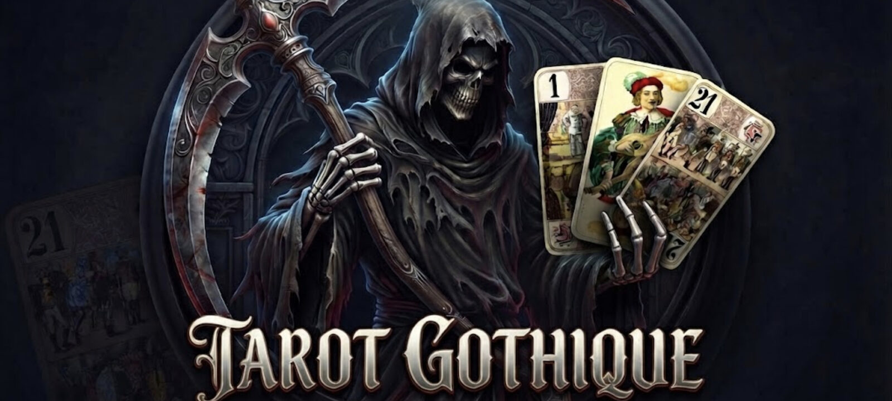

안드로이드 모바일의 온라인 타로 카드 게임
안드로이드용 소셜 타로 게임, 고딕 타로 2026 공식 사이트에 오신 것을 환영합니다. 금빛 장식의 고딕 세계에서 3인, 4인, 5인 프랑스 타로 규칙으로 다른 플레이어와 온라인 대결을 하거나 AI를 상대로 혼자 연습하세요.
온라인 게임은 브라우저가 아닌 안드로이드 앱에서 진행됩니다: 한 번 설치한 뒤 실시간 멀티플레이 테이블에 참여하거나, 다른 플레이어가 없을 때도 싱글 게임을 시작할 수 있습니다.


온라인 게임과 솔로
다른 타로 팬들과 온라인으로 겨루거나 인공지능을 상대로 혼자 연습하세요.
고딕 타로
세련된 금빛 디테일이 어우러진 매혹적인 어둠의 고딕 미학에 빠져 보세요.
카드 게임 규칙
3인, 4인, 5인용 프랑스 타로 전체 규칙, 계약 전략, 점수 계산을 마스터하세요.
앱은 Google Play에서 비공개 테스트 중입니다: 설치하려면 먼저 테스터 그룹에 가입하세요. 고딕 타로 베타 테스터 되기 (프랑스어 페이지)
고딕 타로 카드 게임 하는 법
고딕 타로는 전통 프랑스 타로를 따릅니다: 78장의 카드, 매 판 시작 시 경매, 그리고 수비 측과 트릭마다 맞서는 테이커. 원리는 몇 분이면 이해하지만 익숙해지려면 많은 판이 필요합니다: 알맞은 순간에 알맞은 카드를 따내 계약을 달성하세요.
게임이 점수를 대신 계산하고 매 판이 끝날 때 점수표를 보여 주므로, 계산 대신 전략에 집중할 수 있습니다.
카드 가치, Bouts, 각 계약에 필요한 점수는 프랑스 타로 전체 규칙 페이지에 자세히 설명되어 있습니다.
3·4·5인 타로 카드 게임
- 3인: 모두가 자기 자신을 위해 플레이하는 빠른 게임. 각 플레이어는 24장을 받고 6장은 독(chien)이 됩니다.
- 4인: 기준이 되는 형식: 플레이어당 18장, 독에 6장, 그리고 혼자인 테이커가 세 명의 수비수와 맞섭니다.
- 5인: 각 플레이어는 15장을 받고 3장이 독이 됩니다. 테이커는 킹 하나를 지명합니다. 그 킹을 가진 플레이어가 이번 판의 비밀 파트너가 되며, 다른 플레이어들은 지명된 킹이 나오기 전에 그 정체를 밝혀내야 합니다.
인원수와 상관없이 테이커는 얻은 Bouts(Petit, 트럼프 21, Excuse)에 따라 정해진 점수에 도달해야 합니다: Bout가 없으면 56점, 하나면 51점, 둘이면 41점, 셋 모두면 36점. 빈자리는 AI가 채우므로 혼자서도 3인, 4인, 5인 게임을 할 수 있습니다.
고딕 타로 변형 규칙
고딕 타로는 지명된 킹에 대해 특별한 규칙을 적용합니다: 첫 트릭에서 그 무늬는 킹 자신으로만 리드할 수 있습니다. 자세한 내용은 게임 규칙에서 설명합니다.
모바일 게임: 솔로와 멀티플레이 무료 안드로이드 앱
인공지능을 상대로 혼자 연습하며 자신의 속도로 규칙을 익힌 뒤, 실시간 멀티플레이 테이블에 참여해 다른 타로 팬들에게 도전하세요.
게임은 다운로드와 플레이가 무료입니다: AI와의 오프라인 게임은 비용이 들지 않으며, 온라인 테이블에서는 게임으로 얻은 칩을 사용합니다. 칩과 꾸미기 아이템(카드 뒷면, 테이블 매트)은 선택적인 인앱 구매로도 제공됩니다. 광고는 눈에 띄지 않으며 진행 중인 게임을 절대 끊지 않습니다. 앱과 이 사이트는 15개 언어로 제공됩니다.
고딕 타로: 독특한 비디오 게임 세계
몰입감 있는 게임 테이블, 금테 두른 카드, 대성당 배경: 고딕 타로 2026은 친구들과의 게임 밤의 진짜 규칙에 충실하면서도 강한 시각적 개성을 지닌 타로 게임을 선보이기 위해 Cyril Darbost가 기획하고 개발했습니다.
게임 스크린샷 갤러리에서 게임 테이블과 인터페이스를 살펴보거나, 소개 및 자주 묻는 질문 페이지에서 프로젝트 이야기를 읽어 보세요.
플레이 방식을 기억하는 카드 게임 AI
고딕 타로에서는 인공지능이 테이블의 빈자리를 채웁니다: 경매에 참여하고, 5인 게임에서 킹을 지명하고, 카드를 내고, 사람처럼 점수를 계산합니다. 규칙에 어긋나는 수는 절대 두지 않습니다.
- 판의 기억: 나온 모든 카드를 기억하고, 각 플레이어에게 없는 무늬를 기록하며, 누가 트럼프를 다 썼는지 압니다.
- 매 트릭의 확률: 카드를 고르기 전에 트럼프에 잘릴 위험과 트릭을 이길 가능성을 추정합니다.
- Petit 관리: 트럼프가 많으면 마지막 트릭까지 가져가려 하고, 그렇지 않으면 안전한 트릭이 오는 즉시 구해 냅니다.
- 당신의 습관: 판이 바뀌어도 플레이어마다 열 가지 습관을 추적합니다. 예를 들어 트럼프를 일찍 끌어내기, 테이커의 트릭에 점수를 실어 주기 등입니다. 이 프로필은 당신의 휴대폰에만 저장됩니다.
- 7%의 인간적 요소: 가끔 플레이에 변화를 주지만, 중요하지 않은 카드에서만, 절대 점수를 내주지 않습니다.
주말 토너먼트에서는 봇의 수준이 당신의 카테고리에 맞춰집니다: 그린 카테고리에서는 30%, 옐로에서는 12%의 무작위 수를 두고, 레드에서는 전혀 두지 않습니다. 자세한 내용은 게임 AI의 작동 방식 페이지에 있습니다.
타로 게임에 관한 자주 묻는 질문
고딕 타로는 무료인가요?
네, 다운로드와 플레이가 무료입니다. AI와의 오프라인 게임은 무료이며, 온라인 테이블에서는 게임으로 얻은 칩을 사용합니다. 칩과 꾸미기 아이템은 선택적인 인앱 구매로도 제공됩니다. 광고는 눈에 띄지 않으며 진행 중인 게임을 절대 끊지 않습니다.
AI를 상대로 혼자 타로를 할 수 있나요?
네. 싱글 모드에서는 인공지능과 대결하며, 규칙을 배우거나 친구들과의 게임 사이에 연습하기에 좋습니다.
타로는 몇 명이 하나요?
게임은 3인, 4인, 5인의 세 가지 클래식 형식을 제공합니다. 5인일 때 테이커는 킹을 지명해 비밀 파트너를 고릅니다.
이 모바일 게임은 어떤 기기에서 할 수 있나요?
고딕 타로는 스마트폰과 태블릿용 안드로이드 모바일 앱으로, Google Play에서 무료로 다운로드할 수 있습니다. 게임과 이 사이트는 15개 언어로 제공됩니다.